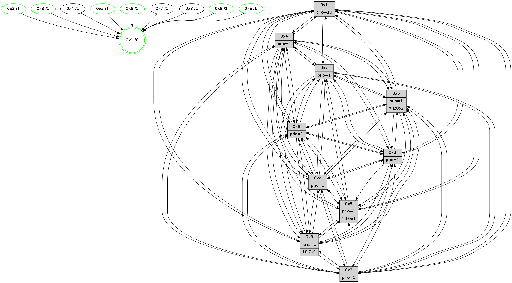

>> << IDX [start] -100 -25 -5 +0 +5 +25 +100 [1545.16530514]
 Previous packets
----------------------------------------------------------------------
1540.436522 beacon01(faad) #0 coord=01,02,03,04,05,06,07,0a,09,08 cycle=688.0ms assoc
-- color-indic=1 64 ab 20
1540.446504 beacon02(faad) #0 coord=01,02,03,04,05,06,07,0a,09,08 cycle=688.0ms assoc 64 38 11
1540.456505 beacon03(faad) #0 coord=01,02,03,04,05,06,07,0a,09,08 cycle=688.0ms assoc 64 42 5c
1540.466505 beacon04(faad) #0 coord=01,02,03,04,05,06,07,0a,09,08 cycle=688.0ms assoc 64 35 b6
1540.476505 beacon05(faad) #0 coord=01,02,03,04,05,06,07,0a,09,08 cycle=688.0ms assoc 64 4f fb
1540.486506 beacon06(faad) #0 coord=01,02,03,04,05,06,07,0a,09,08 cycle=688.0ms assoc 64 c1 2c
1540.496506 beacon07(faad) #0 coord=01,02,03,04,05,06,07,0a,09,08 cycle=688.0ms assoc 64 bb 61
1540.506510 beacon0a(faad) #0 coord=01,02,03,04,05,06,07,0a,09,08 cycle=688.0ms assoc 64 ca 6a
1540.526510 beacon08(faad) #0 coord=01,02,03,04,05,06,07,0a,09,08 cycle=688.0ms assoc 64 3e f0
1540.537454 [Hello(1): seq=891 sym=4,2,9,5,10,3,8,6,7 sysInfo=coloring-mode-on,ColoringModeRequestCalled stat=4:9,2,11,4/2:12,9,3,7/9:1,3,3,3/5:7,1,11,11/10:13,9,13,8/3:6,9,11,13/8:4,0,4,7/6:0,3,7,4/7:10,3,13,3]
1540.540967 [Color(9) seq=525 @0:0 prio=1 >10.@1,1.@2,1.@3,1.@4]
1540.542836 [Hello(2): seq=978 sym=4,5,7,6,3,9,8,10,1 sysInfo=hasWarning stat=4:15,3,9,14/5:13,13,12,4/7:0,6,14,3/6:4,12,2,1/3:3,2,0,0/9:10,13,3,11/8:10,2,7,0/10:10,12,3,11/1:12,1,8,0]
1540.545841 [Color(10) seq=571 @0:0 prio=1]
1540.548997 [Color(3) seq=611 @0:0 prio=1]
1540.552973 [Color(2) seq=558 @0:0 prio=1]
1540.557125 [Color(6) seq=614 @0:0 prio=1 >>1.@2,1.@3,1.@4]
1540.560562 [Hello(5): seq=982 sym=7,6,4,3,1,9,8,10,2 sysInfo=hasWarning stat=7:10,6,0,1/6:0,1,1,1/4:5,13,5,0/3:9,11,5,3/1:1,3,7,0/9:0,5,10,12/8:14,5,6,8/10:8,15,14,9/2:10,2,3,9]
1540.563378 [Color(5) seq=518 @0:0 prio=1 >10.@1,1.@2,1.@3,1.@4]
----------------------------------------------------------------------
1541.224651 beacon01(faad) #0 coord=01,02,03,04,05,06,07,0a,09,08 cycle=688.0ms assoc
-- color-indic=1 64 17 25
1541.234633 beacon02(faad) #0 coord=01,02,03,04,05,06,07,0a,09,08 cycle=688.0ms assoc 64 84 14
1541.244634 beacon03(faad) #0 coord=01,02,03,04,05,06,07,0a,09,08 cycle=688.0ms assoc 64 fe 59
1541.254634 beacon04(faad) #0 coord=01,02,03,04,05,06,07,0a,09,08 cycle=688.0ms assoc 64 89 b3
1541.264633 beacon05(faad) #0 coord=01,02,03,04,05,06,07,0a,09,08 cycle=688.0ms assoc 64 f3 fe
1541.274634 beacon06(faad) #0 coord=01,02,03,04,05,06,07,0a,09,08 cycle=688.0ms assoc 64 7d 29
1541.284634 beacon07(faad) #0 coord=01,02,03,04,05,06,07,0a,09,08 cycle=688.0ms assoc 64 07 64
1541.294639 beacon0a(faad) #0 coord=01,02,03,04,05,06,07,0a,09,08 cycle=688.0ms assoc 64 76 6f
1541.314638 beacon08(faad) #0 coord=01,02,03,04,05,06,07,0a,09,08 cycle=688.0ms assoc 64 82 f5
1541.326459 [Hello(4): seq=982 sym=5,8,6,2,3,9,7,10,1 sysInfo=hasWarning stat=5:12,6,9,4/8:3,3,0,0/6:2,1,5,3/2:5,2,12,3/3:13,8,3,1/9:9,4,12,3/7:3,1,1,0/10:10,10,4,14/1:12,2,14,1]
1541.329974 [Color(1) seq=662 @0:0 prio=10]
1541.331429 [Hello(9): seq=926 sym=2,5,3,4,7,6,8,10,1 sysInfo=hasWarning stat=2:7,13,14,13/5:12,4,6,0/3:5,2,10,7/4:6,8,7,3/7:1,1,7,5/6:7,15,12,2/8:6,1,5,9/10:5,8,7,0/1:4,10,13,1]
1541.339638 [Hello(7): seq=982 sym=2,3,5,6,8,4,9,10,1 sysInfo=hasWarning stat=2:10,13,9,6/3:13,3,13,6/5:15,6,11,5/6:4,3,10,14/8:11,2,2,1/4:4,7,2,0/9:6,5,4,3/10:2,2,1,7/1:11,9,9,0]
1541.346455 [Hello(10): seq=915 sym=6,2,3,8,7,5,9,4,1 sysInfo=hasWarning stat=6:11,12,11,6/2:6,3,13,2/3:11,7,3,15/8:14,12,0,6/7:11,5,14,10/5:14,7,5,3/9:3,4,0,0/4:11,8,10,3/1:5,0,13,1]
1541.350517 [Hello(8): seq=926 sym=5,2,3,7,9,6,4,10,1 sysInfo=hasWarning stat=5:14,9,7,3/2:6,9,2,14/3:12,8,7,6/7:4,3,1,0/9:2,12,7,6/6:6,10,4,2/4:0,7,13,2/10:13,9,13,5/1:3,10,14,0]
----------------------------------------------------------------------
1542.012782 beacon01(faad) #0 coord=01,02,03,04,05,06,07,0a,09,08 cycle=688.0ms assoc
-- color-indic=1 64 d3 2b
1542.022764 beacon02(faad) #0 coord=01,02,03,04,05,06,07,0a,09,08 cycle=688.0ms assoc 64 40 1a
1542.032764 beacon03(faad) #0 coord=01,02,03,04,05,06,07,0a,09,08 cycle=688.0ms assoc 64 3a 57
1542.042764 beacon04(faad) #0 coord=01,02,03,04,05,06,07,0a,09,08 cycle=688.0ms assoc 64 4d bd
1542.052765 beacon05(faad) #0 coord=01,02,03,04,05,06,07,0a,09,08 cycle=688.0ms assoc 64 37 f0
1542.062765 beacon06(faad) #0 coord=01,02,03,04,05,06,07,0a,09,08 cycle=688.0ms assoc 64 b9 27
1542.072764 beacon07(faad) #0 coord=01,02,03,04,05,06,07,0a,09,08 cycle=688.0ms assoc 64 c3 6a
1542.082769 beacon0a(faad) #0 coord=01,02,03,04,05,06,07,0a,09,08 cycle=688.0ms assoc 64 b2 61
1542.102770 beacon08(faad) #0 coord=01,02,03,04,05,06,07,0a,09,08 cycle=688.0ms assoc 64 46 fb
1542.116221 [Hello(1): seq=892 sym=4,2,9,5,10,3,8,6,7 sysInfo=coloring-mode-on,ColoringModeRequestCalled stat=4:10,2,11,4/2:13,10,3,7/9:2,4,3,3/5:8,2,11,11/10:14,9,13,8/3:7,10,11,13/8:5,0,4,7/6:0,4,7,4/7:11,3,13,3]
1542.119265 [Hello(5): seq=983 sym=7,6,4,3,1,9,8,10,2 sysInfo=hasWarning stat=7:11,6,0,1/6:0,1,1,1/4:6,13,5,0/3:9,11,5,3/1:2,4,7,0/9:1,5,10,12/8:15,5,6,8/10:9,15,14,9/2:10,2,3,9]
1542.121959 [Color(10) seq=572 @0:0 prio=1]
1542.123561 [Hello(6): seq=983 sym=3,2,5,4,7,9,8,10,1 sysInfo=hasWarning stat=3:10,2,10,0/2:14,8,4,1/5:4,11,0,6/4:15,14,9,9/7:13,7,8,1/9:1,13,11,12/8:1,12,3,10/10:5,11,4,13/1:6,4,14,1]
1542.126255 [Hello(2): seq=979 sym=4,5,7,6,3,9,8,10,1 sysInfo=hasWarning stat=4:0,3,9,14/5:14,14,12,4/7:1,6,14,3/6:4,13,2,1/3:3,2,0,0/9:11,14,3,11/8:11,2,7,0/10:11,12,3,11/1:13,2,8,0]
1542.128759 [Color(6) seq=615 @0:0 prio=1 >>1.@2,1.@3,1.@4]
1542.131046 [Color(9) seq=526 @0:0 prio=1 >10.@1,1.@2,1.@3,1.@4]
1542.134276 [Hello(3): seq=983 sym=1,7,6,2,4,8,9,10,5 sysInfo=hasWarning stat=1:3,1,0,0/7:1,3,15,0/6:3,12,3,1/2:1,3,1,0/4:3,6,1,14/8:7,3,8,9/9:11,7,7,2/10:13,10,13,5/5:0,13,8,3]
1542.137435 [Color(3) seq=612 @0:0 prio=1]
1542.139404 [Color(2) seq=559 @0:0 prio=1]
1542.146160 [Color(5) seq=519 @0:0 prio=1 >10.@1,1.@2,1.@3,1.@4]
----------------------------------------------------------------------
1542.800912 beacon01(faad) #0 coord=01,02,03,04,05,06,07,0a,09,08 cycle=688.0ms assoc
-- color-indic=1 64 6f 2e
1542.810894 beacon02(faad) #0 coord=01,02,03,04,05,06,07,0a,09,08 cycle=688.0ms assoc 64 fc 1f
1542.820894 beacon03(faad) #0 coord=01,02,03,04,05,06,07,0a,09,08 cycle=688.0ms assoc 64 86 52
1542.830896 beacon04(faad) #0 coord=01,02,03,04,05,06,07,0a,09,08 cycle=688.0ms assoc 64 f1 b8
1542.840896 beacon05(faad) #0 coord=01,02,03,04,05,06,07,0a,09,08 cycle=688.0ms assoc 64 8b f5
1542.850895 beacon06(faad) #0 coord=01,02,03,04,05,06,07,0a,09,08 cycle=688.0ms assoc 64 05 22
1542.860896 beacon07(faad) #0 coord=01,02,03,04,05,06,07,0a,09,08 cycle=688.0ms assoc 64 7f 6f
1542.870901 beacon0a(faad) #0 coord=01,02,03,04,05,06,07,0a,09,08 cycle=688.0ms assoc 64 0e 64
1542.890901 beacon08(faad) #0 coord=01,02,03,04,05,06,07,0a,09,08 cycle=688.0ms assoc 64 fa fe
1542.902130 PARSE ERROR************************
Traceback (most recent call last):
File "PacketAnalysis.py", line 167, in showOperaPacket
structPacket = OperaPacketParse.parsePacket(rawPacket)
File "../../pkg-python/HipSens/Core/OperaPacketParse.py", line 461, in parsePacket
return parseHelloMessage(data)
File "../../pkg-python/HipSens/Core/OperaPacketParse.py", line 127, in parseHelloMessage
assert struct.calcsize("H")*len(neighAddrList) == len(linkList)
AssertionError
48 34 0a 00 03 94 00 02 02 12 06 00 02 00 03 00 08 00 07 00 05 00 09 00 04 00 01 00 53 04 00 02 00 00 4c 12 6b dc 2d 47 f3 8c 60 cf ae 5b 35 8e 00 53 3a 8b 1d 06 4c 49
1542.906168 [Hello(8): seq=927 sym=5,2,3,7,9,6,4,10,1 sysInfo=hasWarning stat=5:15,10,7,3/2:7,10,2,14/3:13,9,7,6/7:4,3,1,0/9:2,13,7,6/6:7,11,4,2/4:0,7,13,2/10:13,10,13,5/1:4,10,14,0]
1542.910402 [Hello(9): seq=927 sym=2,5,3,4,7,6,8,10,1 sysInfo=hasWarning stat=2:7,14,14,13/5:12,5,6,0/3:6,3,10,7/4:6,8,7,3/7:2,1,7,5/6:7,15,12,2/8:7,1,5,9/10:6,8,7,0/1:5,10,13,1]
1542.913350 [Hello(4): seq=983 sym=5,8,6,2,3,9,7,10,1 sysInfo=hasWarning stat=5:13,7,9,4/8:4,3,0,0/6:3,2,5,3/2:6,3,12,3/3:14,9,3,1/9:10,5,12,3/7:4,1,1,0/10:11,11,4,14/1:13,3,14,1]
1542.918668 [Color(1) seq=663 @0:0 prio=10]
1542.921170 [Hello(7): seq=983 sym=2,3,5,6,8,4,9,10,1 sysInfo=hasWarning stat=2:11,14,9,6/3:14,4,13,6/5:15,7,11,5/6:5,4,10,14/8:12,2,2,1/4:4,7,2,0/9:6,6,4,3/10:3,3,1,7/1:12,9,9,0]
----------------------------------------------------------------------
1543.589041 beacon01(faad) #0 coord=01,02,03,04,05,06,07,0a,09,08 cycle=688.0ms assoc
-- color-indic=1 64 bb 1b
1543.599024 beacon02(faad) #0 coord=01,02,03,04,05,06,07,0a,09,08 cycle=688.0ms assoc 64 28 2a
1543.609023 beacon03(faad) #0 coord=01,02,03,04,05,06,07,0a,09,08 cycle=688.0ms assoc 64 52 67
1543.619025 beacon04(faad) #0 coord=01,02,03,04,05,06,07,0a,09,08 cycle=688.0ms assoc 64 25 8d
1543.629023 beacon05(faad) #0 coord=01,02,03,04,05,06,07,0a,09,08 cycle=688.0ms assoc 64 5f c0
1543.639025 beacon06(faad) #0 coord=01,02,03,04,05,06,07,0a,09,08 cycle=688.0ms assoc 64 d1 17
1543.649024 beacon07(faad) #0 coord=01,02,03,04,05,06,07,0a,09,08 cycle=688.0ms assoc 64 ab 5a
1543.659031 beacon0a(faad) #0 coord=01,02,03,04,05,06,07,0a,09,08 cycle=688.0ms assoc 64 da 51
1543.679029 beacon08(faad) #0 coord=01,02,03,04,05,06,07,0a,09,08 cycle=688.0ms assoc 64 2e cb
1543.692203 [Hello(1): seq=893 sym=4,2,9,5,10,3,8,6,7 sysInfo=coloring-mode-on,ColoringModeRequestCalled stat=4:10,2,11,4/2:14,11,3,7/9:2,5,3,3/5:8,3,11,11/10:15,10,13,8/3:8,11,11,13/8:5,0,4,7/6:1,5,7,4/7:12,3,13,3]
1543.694937 [Hello(5): seq=984 sym=7,6,4,1,9,8,10 sysInfo=hasWarning stat=7:12,6,0,1/6:0,1,1,1/4:7,13,5,0/1:3,5,7,0/9:2,5,10,12/8:0,5,6,8/10:10,15,14,9]
1543.697513 [Color(5) seq=520 @0:0 prio=1 >10.@1,1.@2,1.@3,1.@4]
1543.699215 [Color(9) seq=527 @0:0 prio=1 >10.@1,1.@2,1.@3,1.@4]
1543.703516 [Color(10) seq=573 @0:0 prio=1]
1543.704922 [Hello(6): seq=984 sym=3,2,5,4,7,9,8,10,1 sysInfo=hasWarning stat=3:11,3,10,0/2:14,9,4,1/5:4,12,0,6/4:0,14,9,9/7:14,7,8,1/9:2,14,11,12/8:2,12,3,10/10:6,11,4,13/1:7,5,14,1]
1543.708685 [Color(6) seq=616 @0:0 prio=1 >>1.@2,1.@3,1.@4]
1543.711236 [Hello(2): seq=980 sym=4,5,7,6,3,9,8,10,1 sysInfo=hasWarning stat=4:1,3,9,14/5:14,15,12,4/7:2,6,14,3/6:4,13,2,1/3:3,2,0,0/9:12,14,3,11/8:12,2,7,0/10:12,12,3,11/1:14,3,8,0]
1543.714014 [Hello(3): seq=984 sym=1,7,6,2,4,8,9,10,5 sysInfo=hasWarning stat=1:4,2,0,0/7:2,3,15,0/6:3,12,3,1/2:1,4,1,0/4:4,6,1,14/8:8,3,8,9/9:12,7,7,2/10:14,10,13,5/5:0,14,8,3]
1543.718734 [Color(3) seq=613 @0:0 prio=1]
1543.724894 [Color(2) seq=560 @0:0 prio=1]
----------------------------------------------------------------------
1544.377174 beacon01(faad) #0 coord=01,02,03,04,05,06,07,0a,09,08 cycle=688.0ms assoc
-- color-indic=1 64 07 1e
1544.387156 beacon02(faad) #0 coord=01,02,03,04,05,06,07,0a,09,08 cycle=688.0ms assoc 64 94 2f
1544.397156 beacon03(faad) #0 coord=01,02,03,04,05,06,07,0a,09,08 cycle=688.0ms assoc 64 ee 62
1544.407157 beacon04(faad) #0 coord=01,02,03,04,05,06,07,0a,09,08 cycle=688.0ms assoc 64 99 88
1544.417157 beacon05(faad) #0 coord=01,02,03,04,05,06,07,0a,09,08 cycle=688.0ms assoc 64 e3 c5
1544.427157 beacon06(faad) #0 coord=01,02,03,04,05,06,07,0a,09,08 cycle=688.0ms assoc 64 6d 12
1544.437159 beacon07(faad) #0 coord=01,02,03,04,05,06,07,0a,09,08 cycle=688.0ms assoc 64 17 5f
1544.447161 beacon0a(faad) #0 coord=01,02,03,04,05,06,07,0a,09,08 cycle=688.0ms assoc 64 66 54
1544.467162 beacon08(faad) #0 coord=01,02,03,04,05,06,07,0a,09,08 cycle=688.0ms assoc 64 92 ce
1544.478322 [Hello(4): seq=984 sym=5,8,6,2,3,9,7,10,1 sysInfo=hasWarning stat=5:14,8,9,4/8:4,3,0,0/6:4,3,5,3/2:7,4,12,3/3:15,10,3,1/9:10,6,12,3/7:5,1,1,0/10:11,12,4,14/1:14,4,14,1]
1544.481016 [Hello(7): seq=984 sym=2,3,5,6,8,4,9,10,1 sysInfo=hasWarning stat=2:12,15,9,6/3:15,5,13,6/5:0,8,11,5/6:6,5,10,14/8:12,2,2,1/4:4,7,2,0/9:6,7,4,3/10:3,4,1,7/1:13,9,9,0]
1544.483763 [Hello(10): seq=917 sym=6,2,3,8,7,5,9,4,1 sysInfo=hasWarning stat=6:13,14,11,6/2:8,5,13,2/3:13,9,3,15/8:0,12,0,6/7:12,5,14,10/5:14,8,5,3/9:4,5,0,0/4:12,8,10,3/1:7,1,13,1]
1544.487701 [Color(1) seq=664 @0:0 prio=10]
1544.489353 [Hello(9): seq=928 sym=2,5,3,4,7,6,8,10,1 sysInfo=hasWarning stat=2:8,15,14,13/5:12,5,6,0/3:7,4,10,7/4:7,8,7,3/7:3,1,7,5/6:8,0,12,2/8:7,1,5,9/10:6,9,7,0/1:6,11,13,1]
1544.495698 [Hello(8): seq=928 sym=5,2,3,7,9,6,4,10,1 sysInfo=hasWarning stat=5:0,11,7,3/2:8,11,2,14/3:14,10,7,6/7:5,3,1,0/9:3,14,7,6/6:8,12,4,2/4:1,7,13,2/10:13,11,13,5/1:5,11,14,0]